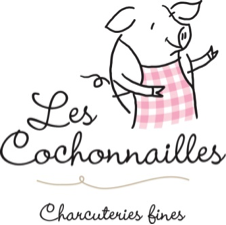

Nos commanditaires principaux
Le club de rugby les Gaulois contribue au développement du rugby auprès des jeunes. Nous proposons une approche basée sur de fortes valeurs sportives et sociales et tenons à rendre ce sport accessible à un maximum de jeunes. Si vous souhaitez nous aider, n’hésitez pas à consulter le dossier de commandite ci-dessous et à nous contacter.